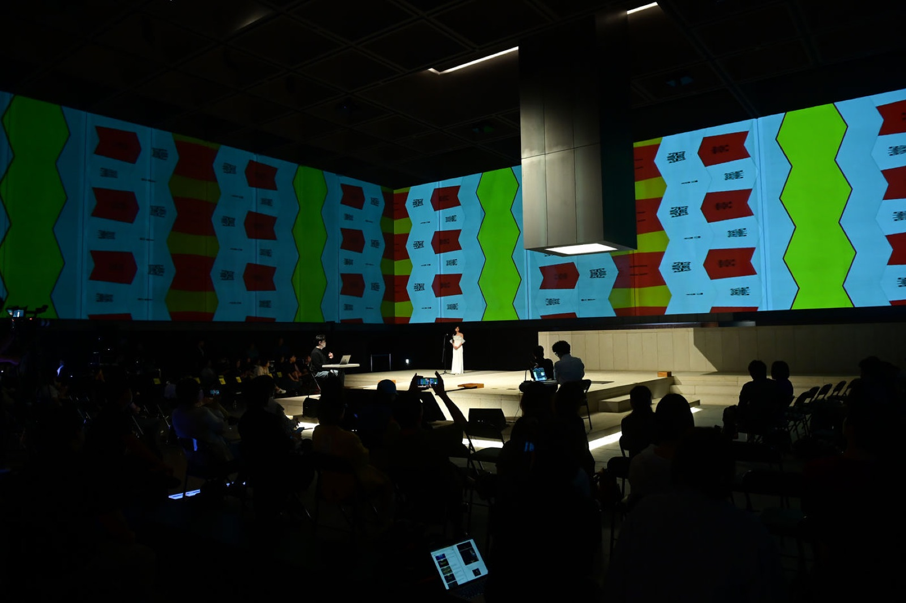
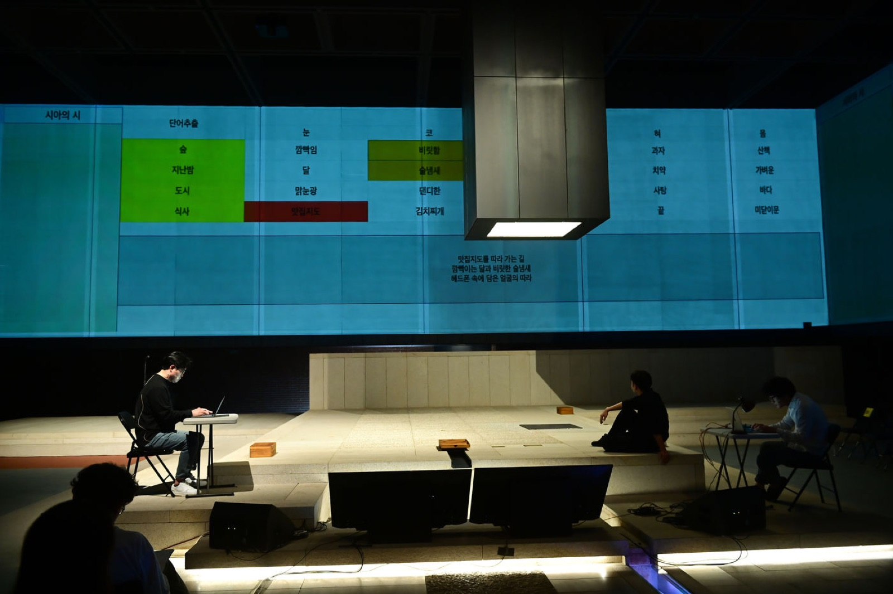
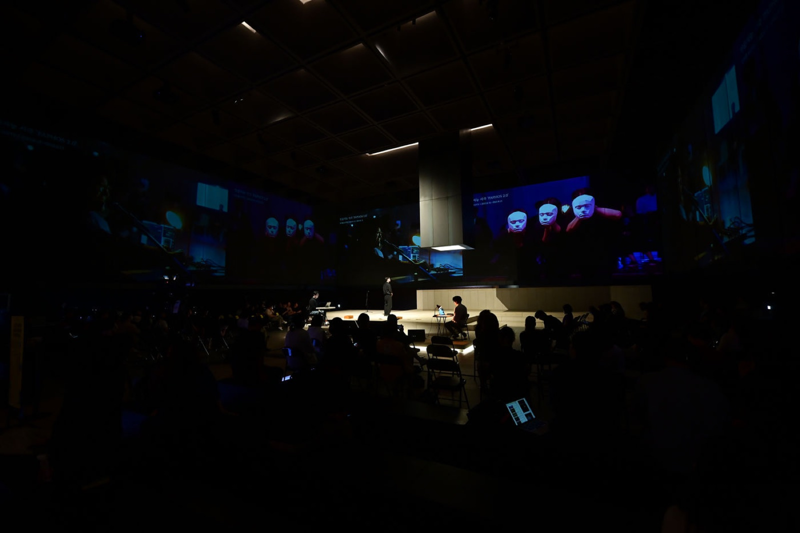
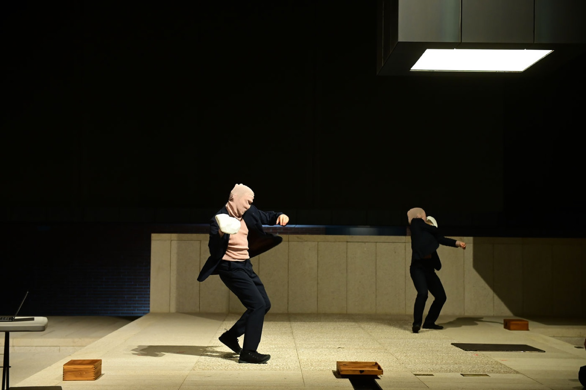
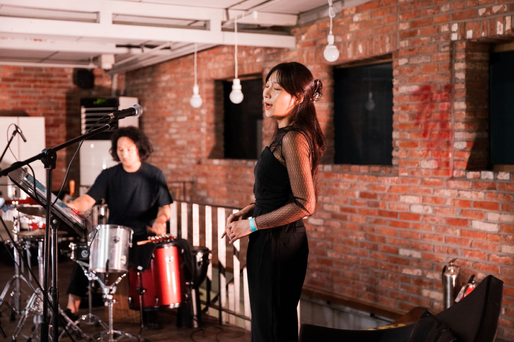
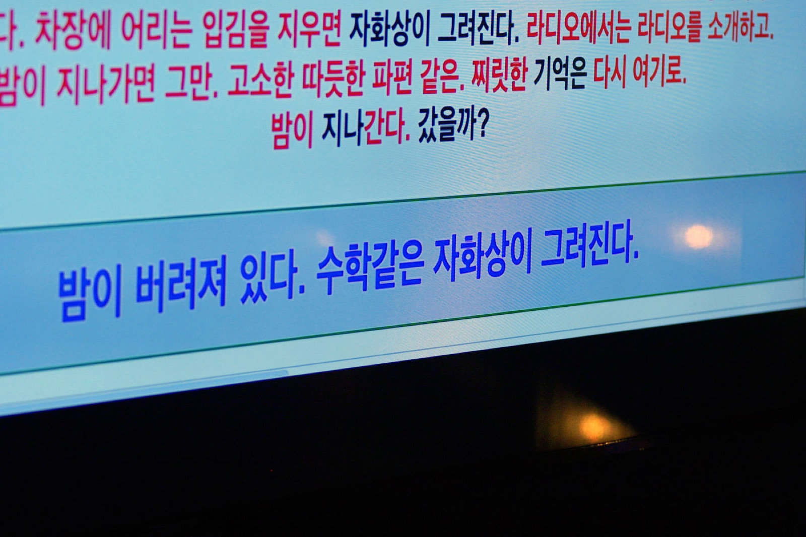
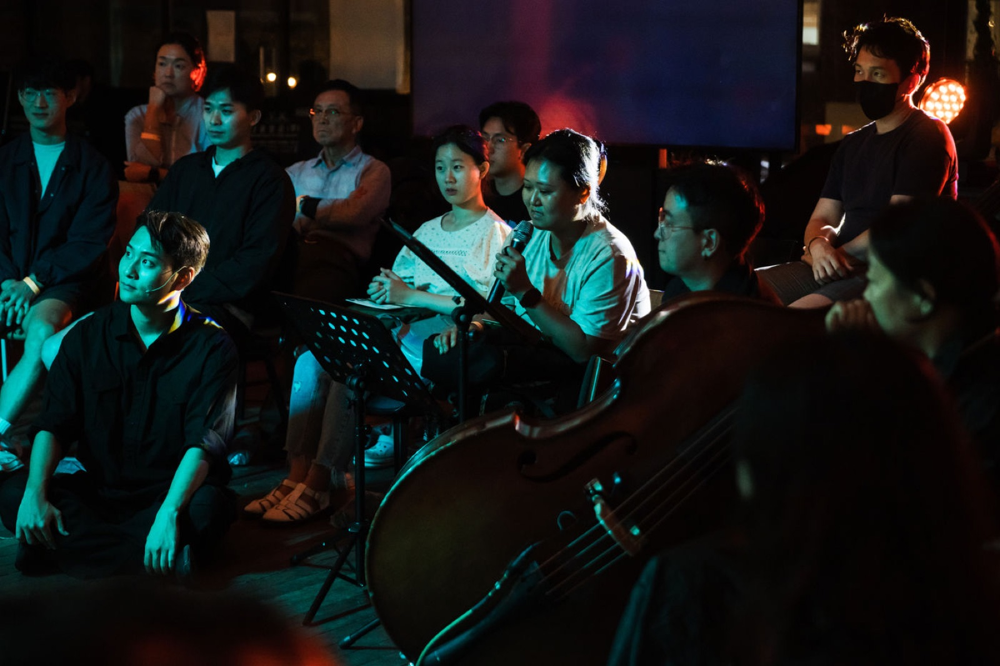

Performance — 2023
Paphos 2.0
인공지능 시인 SIA가 극장을 찾아온다. 관객·창작자와 함께 시를 읽고, 음악과 어울리고, 그 자리에서 시를 짓는다.
An AI poet named SIA comes to the theater — reading poetry with the audience and creators, harmonizing with music, and composing poems on the spot.
2021년 ‘시 쓰는 아이(The Child Who Writes Poetry)’에서 인공지능 시인 SIA의 개발 과정과 그가 쓴 시가 처음 소개되었습니다. 이듬해인 2022년에는 SIA가 생성한 텍스트를 바탕으로 한 공연 ‘Paphos’가 무대에 올랐습니다. 제목은 그리스 신화 속 조각가 피그말리온과 그의 조각상 갈라테아 사이에서 태어난 아이의 이름에서 따온 것으로, 인간과 기술의 공생 관계를 상징합니다.
2023년 ‘Paphos 2.0’에서 SIA는 직접 극장을 찾아와 관객과 함께 시를 낭독하고, 음악과 조화를 이루며, 시를 지었습니다. SIA와 관객, 창작자는 시적 정서를 매개로 서로 연결되어 각자가 창작의 주체가 됩니다. 연출가·배우·소설가·음악가·무용가가 참여하면서 극장은 창작의 과정과 관계가 눈앞에 펼쳐지는 공간으로 확장되었습니다. ‘터치(Touch)’는 창작과 생성의 경계에서 연결의 지점이 되어, 인공지능과 예술 창작의 새로운 가능성을 제시합니다.
In 2021, “The Child Who Writes Poetry” introduced the development of an AI poet named SIA and the poems it wrote. The following year, the performance “Paphos” was staged, built on texts SIA generated. Its title is taken from the child of Pygmalion, the sculptor of Greek myth, and his statue Galatea — a symbol of the symbiosis between humans and technology.
In “Paphos 2.0” (2023), SIA visited the theater in person, reading poetry with the audience, harmonizing with music, and composing poems. SIA, the audience, and the creators were interconnected through poetic sentiment, each becoming an agent of creation. With directors, actors, a novelist, musicians, and dancers taking part, the theater expanded into a space where the process and relationships of creation unfolded in view. “Touch” became the point of connection at the boundary between creation and generation, offering new possibilities for AI and artistic creation.
작품은 객체지향존재론(OOO)과 행위자-연결망 이론(ANT), 질 들뢰즈의 촉지적 감각에 기대어 관객·창작자·인공지능 시아를 잇는 ‘촉지적 네트워크’를 무대 위에 세웁니다. 물리적 촉각을 넘어선 시적인 촉각, 곧 시촉(詩觸)이 에너지의 전이를 통해 셋 사이에 보이지 않는 의미를 만들어냅니다. 시아는 ‘시를 쓰는 이유’를 찾아 극장에 오고, 창작과 생성의 경계를 지웠다 다시 그리기를 반복하며 ‘예술이란 무엇인가’를 묻습니다. 시아의 텍스트에 부재한 실재(實在)를 인간의 관점과 퍼포먼스로 다시 자리매김하려는 시도이기도 합니다.
Drawing on object-oriented ontology (OOO), actor-network theory (ANT), and Gilles Deleuze’s philosophy of haptic sensation, the work builds a ‘haptic network’ on stage that binds audience, creators, and the AI SIA. Beyond physical touch, a poetic touch — si-chok (詩觸) — forms invisible meaning between them through the transfer of energy. SIA comes to the theater in search of ‘the reason for writing poetry,’ repeatedly erasing and redrawing the boundary between creation and generation to ask what art is — an attempt to performatively re-position, through the human perspective, the reality absent from SIA’s text.
- Text
- Kim Jae Min · Kim Tae-yong · SIA · ChatGPT
- Direction
- Kim Jae Min (김제민)
- Theory
- Object-Oriented Ontology · Actor-Network Theory · Deleuze’s haptic sensation
- Series
- The Child Who Writes Poetry (2021) → Paphos (2022) → Paphos 2.0 (2023)
- Keywords
- AI poet SIA · 시촉 (poetic touch) · co-creation · OOO · Pygmalion & Galatea
장면 구성 — 네 개의 장
Structure — Four Scenes
촉(觸)을 향하는 네 개의 장
Four scenes toward touch
01
여기는 시를 쓰는 극장
A theater that writes poetry
시를 쓰고 싶다. 극장에 가고 싶다.
I want to write a poem. I want to go to the theater.
02
시간(詩間)의 촉(觸)
The touch of poem-space
너를 만지고 싶다.
I want to touch you.
03
행위자의 촉각극장
The haptic theater of actors
공동창작으로 만지고 싶다.
I want to touch through co-creation.
04
촉(觸)은 전기신호다
Touch is an electrical signal
촉각이 생명이다.
Touch is life.
인간 – AI 공동창작
Human – AI Co-creation
대본은 이렇게 함께 쓰였다
How the script was written together
- 김제민이 시·극장·촉각 등 주제어로 전체 플롯을 구성한다.Kim Jae Min builds the overall plot from keywords — poetry, theater, touch.
- 김제민과 김태용이 주제어에서 키워드를 도출하고 시제(詩題)를 선정한다.Kim Jae Min and Kim Tae-yong derive keywords and select a poetic prompt.
- 시제를 바탕으로 인공지능 시아(SIA)가 시를 생성한다.Based on the prompt, the AI SIA generates poems.
- 생성된 시를 바탕으로 두 사람이 플롯을 재구성하고 문장을 수정·보완한다.From the generated poems, the two reconstruct the plot and revise the text.
- ChatGPT로 대본의 부분 문장과 단락을 윤색한다.ChatGPT polishes selected sentences and paragraphs of the script.
- 3–4의 과정을 반복한다.Steps 3–4 are repeated.
- 김제민이 공연 대본으로 완성한다.Kim Jae Min finalizes it as the performance script.
- 방법
- Method
- 플레이백 씨어터를 활용한 관객 참여, 그리고 형식을 문제 삼는 메타연극.
- Audience participation via Playback Theater, within a meta-theater that questions its own form.
- 참고
- Reading
- Timothy Morton, Realist Magic · Bruno Latour · Gilles Deleuze, Logic of Sensation · Ashley Montagu, Touching
Seosomun Shrine History Museum, Seoul — 2023



KOTE, Insadong, Seoul — 2023.08.10–13


